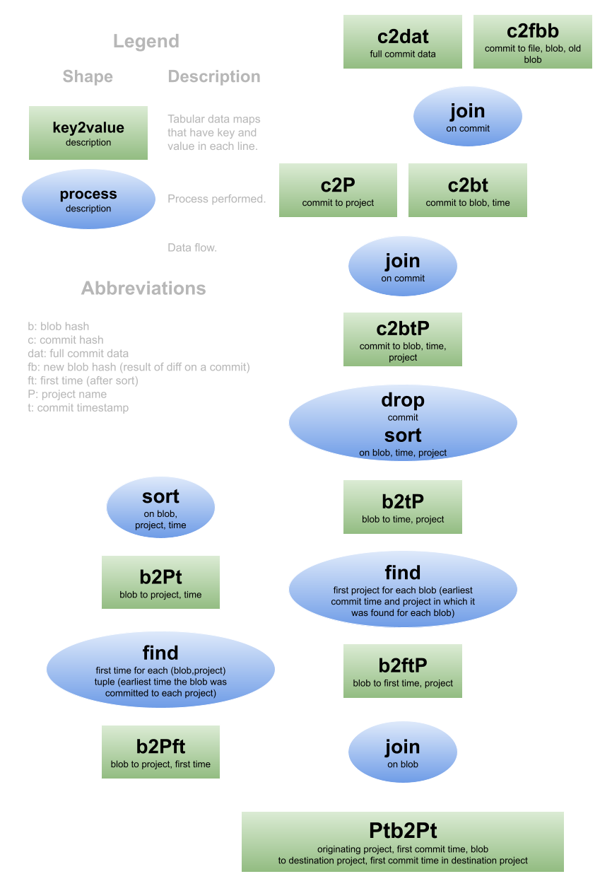
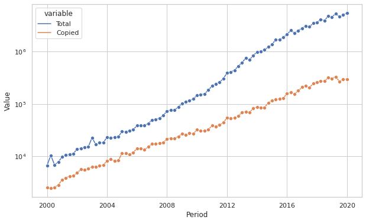
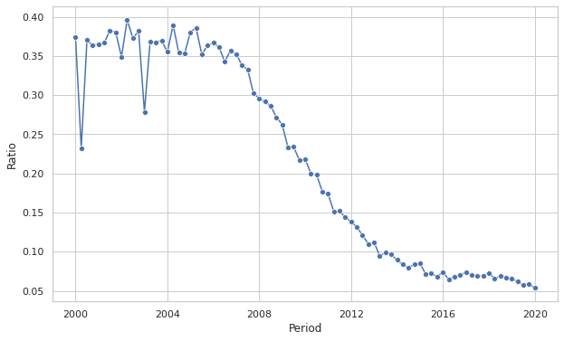
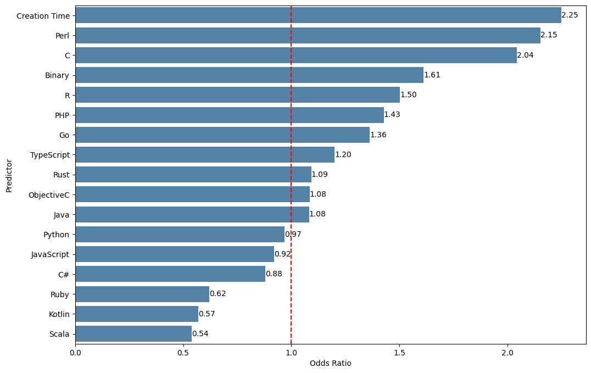
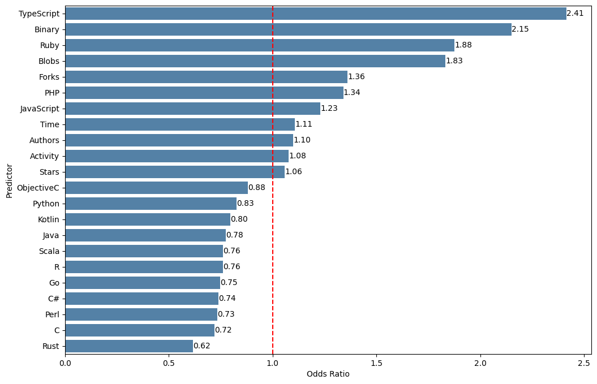
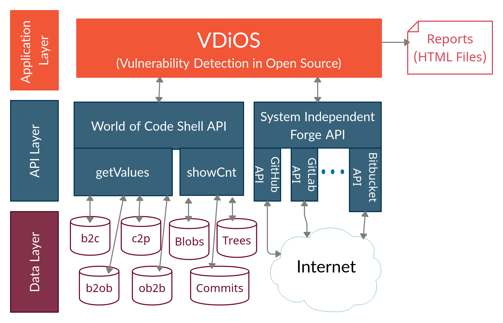

A showcase of my work in Data Science, Empirical Software Engineering, and Mining Open Source Software Repositories
Here, you will find selected research projects I contributed to during my PhD, each accompanied by a brief description,
figures, and publication details.
My work primarily focuses on developing data-driven insights, methods and tools
to improve reliability in open-source software supply chains.
Copy-Based Reuse
In contrast to some studies of dependency-based reuse supported via package managers,
no studies of OSS-wide copy-based reuse exist. In this project, we create a dataset that
seeks to encourage the studies of OSS-wide copy-based reuse by providing copying activity
data that captures whole-file reuse in nearly all OSS. To accomplish that, we develop
approaches to detect copy-based reuse by developing an efficient algorithm that exploits
World of Code infrastructure. We expect this data will enable future research and tool
development that support such reuse and minimize associated risks.

Reuse Identification Data Flow Diagram
To gain deeper insights into copy-based reuse, we analyze its prevalence and identify the factors influencing the propensity to reuse.
We begin with a set of potential influencing factors, grounded in Social Contagion Theory,
related to the propensity to reuse and sample instances of different reuse
types. We then survey developers to better understand their intentions for this particular practice.

Generated and Reused Blobs Trends

Reused to Generated Blobs Ratio Trend
Our results indicate that copy-based reuse is common, with many developers being aware of it when writing code.
The propensity for a file to be reused varies greatly among languages and between source code and binary files,
consistently decreasing over time.
Files introduced by popular projects are more likely to be reused, but at least half of reused resources
originate from "small" and "medium" projects.
Developers had various reasons for reuse but were generally positive about using a package manager in case it was available.

Odds Ratios - Blob-level Logistic Regression Model

Odds Ratios - Project-level Logistic Regression Model
Publications:
Jahanshahi, M., Reid, D., & Mockus, A..
"Beyond Dependencies: The Role of Copy-Based Reuse in Open Source Software Development."
Accepted in ACM Transactions on Software Engineering and Methodology (TOSEM).
Preprint -
Replication Package -
Repository
Jahanshahi, M. & Mockus, A. (2024, April).
"Dataset: Copy-based Reuse in Open Source Software."
In 2024 IEEE/ACM 21st International Conference on Mining Software Repositories (MSR) (pp. 42-47). IEEE.
Paper -
Repository
Orphan Vulnerabilities
A key premise of open source software is the ability to copy code to other open source projects (white-box reuse).
Such copying accelerates development of new projects, but the code flaws in the original projects, such as
vulnerabilities, may also spread even if fixed in the projects from where the code was appropriated.
The extent of the spread of vulnerabilities through code reuse, the potential impact of such spread, or
avenues for mitigating risk of these secondary vulnerabilities has not been studied in the context of a
nearly complete collection of open source code. In this project, we develop a tool, VDiOS,
to help identify and fix white-box-reuse-induced vulnerabilities that have been already patched in
the original projects (orphan vulnerabilities). We hope that VDiOS will lead to further study and
mitigation of risks from orphan vulnerabilities and other orphan code flaws.

VDiOS Architecture Diagram
Publications:
Reid, D., Jahanshahi, M., & Mockus, A. (2022, May).
"The extent of orphan vulnerabilities from code reuse in open source software."
In Proceedings of the 44th International Conference on Software Engineering (ICSE) (pp. 2104-2115).
Nominated for ACM SIGSOFT Distinguished Paper Award. Paper -
Repository
Collaboration Graph
In this project, we aim to facilitate the understanding of the developer collaboration
structure and relationships among projects based on the bi-graph of what projects developers
contribute to by providing an interactive collaboration graph of this ecosystem, using the
data obtained from World of Code infrastructure. Our attempts to visualize the entirety
of projects and developers were stymied by the inability of the layout and visualization
tools to process the exceedingly large scale of the full graph. We used WoC to filter the nodes
and edges to reduce the scale of the graph that made it amenable to an interactive visualization.
Lyulina, E., & Jahanshahi, M. (2021, May).
"Building the collaboration graph of open-source software ecosystem."
In 2021 IEEE/ACM 18th International Conference on Mining Software Repositories (MSR) (pp. 618-620). IEEE.
Paper -
Repository